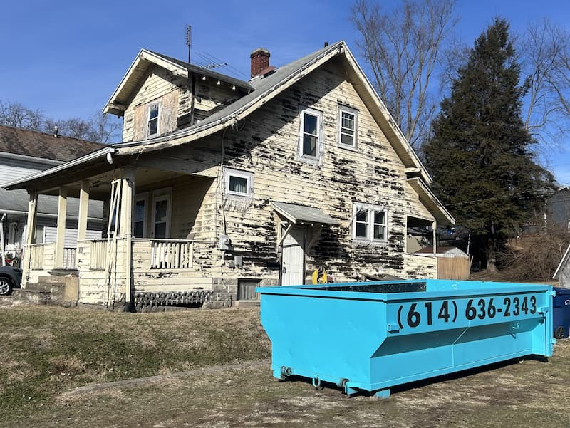

Kitchen & Bathroom Remodel Dumpster Rental Guide
Whether you're updating countertops or tearing everything down to the studs, your remodel will generate debris. Here's everything Columbus homeowners and contractors need to know about dumpster rental for kitchen and bathroom renovations—from what to expect to how to coordinate delivery with your project timeline.

A contractor I work with regularly called me last fall with an unusual request. He was starting a kitchen remodel in Upper Arlington on Monday, but his homeowner client had a question he couldn't answer: "What happens to all our old stuff?"
The homeowners—a couple in their sixties—had lived in the house for thirty years. They'd raised kids in that kitchen. The cabinets were outdated, sure, but they were solid oak. The countertops were worn, but the appliances still worked fine. They felt guilty just throwing everything in a dumpster.
I drove over that weekend to talk through their options. We identified cabinets that could go to Habitat for Humanity ReStore, appliances a local charity would pick up, and fixtures that a neighbor doing their own renovation actually wanted. What was left—the damaged drywall, worn flooring, broken tile—went in the dumpster I delivered Monday morning.
"We thought demolition day would be sad," the wife told me later. "But knowing the good stuff went to people who could use it made it feel like a fresh start instead of just destruction."
That's the thing about kitchen and bathroom remodels. They're exciting—new spaces, new functionality, increased home value. But they also generate a lot of debris, and figuring out what to do with all of it can feel overwhelming. This guide covers everything you need to know.
Understanding Remodel Debris: What Comes Out of Your Kitchen or Bathroom
Before we talk about dumpster sizing and logistics, let's look at what you're actually dealing with. The debris from a remodel varies dramatically based on the scope of your project.
Partial Remodel vs. Full Gut Job: A Big Difference
Not all remodels are created equal. A cosmetic refresh generates far less debris than a complete gut renovation.
Partial/Cosmetic Remodel (Minimal Debris)
These projects update the look without major structural changes:
- Replacing countertops only (keeping existing cabinets)
- Refacing or painting cabinets
- Updating fixtures and hardware
- Installing new appliances
- Replacing flooring over existing subfloor
- New backsplash over existing drywall
Debris generated: Old countertops, removed fixtures, possibly old flooring, packaging from new materials. Usually 1-2 cubic yards—often manageable without a dumpster, though one makes the job much easier.
Moderate Remodel (Significant Debris)
These projects involve removing major components but keep the basic layout:
- Removing and replacing all cabinets
- New countertops with cabinet replacement
- Removing tile flooring down to subfloor
- Removing tile backsplash and damaged drywall behind it
- Replacing bathtub/shower surround
- Updating all fixtures and some plumbing
Debris generated: Old cabinets, countertops, flooring, some drywall, fixtures, tile. Usually 3-5 cubic yards. A 14-yard dumpster handles this comfortably.
Full Gut Renovation (Major Debris)
Everything comes out down to the studs:
- All cabinets, countertops, and fixtures removed
- All drywall removed (walls and ceiling)
- All flooring removed including subfloor if damaged
- Plumbing and electrical exposed for reconfiguration
- Possible wall removal or relocation
- Insulation removal and replacement
Debris generated: Everything listed above plus framing lumber, insulation, possibly concrete or masonry. Can easily reach 6-10+ cubic yards for a kitchen, 4-6 cubic yards for a bathroom. A 14-yard dumpster works for most gut jobs, though large kitchens may need a second load.
Kitchen Remodel: Typical Debris Breakdown
Here's what typically comes out of a kitchen during a moderate to full remodel:
Cabinets
- Upper cabinets: Usually 4-8 units in a standard kitchen
- Base cabinets: Usually 6-10 units including sink base and corner units
- Pantry cabinet: If present, these are large and take up significant space
- Material matters: Solid wood cabinets are heavier than particle board; both dispose the same way
Weight consideration: A full set of kitchen cabinets typically weighs 400-800 lbs depending on material and size.
Countertops
- Laminate: Lightweight, easy to handle and dispose
- Butcher block: Moderate weight, can often be donated or repurposed
- Granite/quartz/marble: Very heavy—a standard kitchen's worth can weigh 500-1,000+ lbs
- Concrete: Extremely heavy; weight is a major consideration
Weight consideration: Stone countertops are the heaviest single item in most kitchen remodels. A typical granite countertop weighs 15-20 lbs per square foot. A 30 sq ft countertop = 450-600 lbs just for the counters.
Flooring
- Vinyl/linoleum: Lightweight, easy to remove and dispose
- Laminate: Lightweight, disposes easily
- Hardwood: Moderate weight; can sometimes be salvaged or donated
- Ceramic/porcelain tile: Heavy and bulky; tile + thinset + backer board adds up
Weight consideration: Ceramic tile flooring weighs about 4-5 lbs per square foot (including thinset). A 120 sq ft kitchen floor = 480-600 lbs of tile.
Appliances
- Refrigerator: 200-400 lbs (requires freon removal before disposal—see prohibited items below)
- Stove/range: 100-250 lbs
- Dishwasher: 75-150 lbs
- Microwave: 30-60 lbs
Note: Working appliances are often better donated than disposed. More on this below.
Other Kitchen Debris
- Drywall: 1.5-2 lbs per square foot
- Backsplash tile: Adds weight quickly, especially with adhesive attached
- Sink and fixtures: Stainless steel sinks are light; cast iron sinks are heavy (80-100 lbs)
- Light fixtures: Usually minimal weight
Bathroom Remodel: Typical Debris Breakdown
Bathrooms are smaller than kitchens but often generate surprisingly heavy debris due to tile, fixtures, and water-damaged materials.
Fixtures
- Toilet: 60-120 lbs (porcelain is heavy)
- Pedestal sink: 50-80 lbs
- Vanity with countertop: 100-300 lbs depending on size and materials
- Bathtub (fiberglass/acrylic): 70-100 lbs
- Bathtub (cast iron): 300-500 lbs—this is a major weight factor
- Shower surround (fiberglass): 50-100 lbs
- Tile shower surround: Can be 300-500+ lbs including backer board
Weight consideration: A cast iron bathtub alone can use up 10-12% of your 4,000 lb weight allowance. Plan accordingly.
Tile and Flooring
- Floor tile: 4-5 lbs per square foot with thinset
- Wall tile: 3-4 lbs per square foot with adhesive
- Shower tile: A fully tiled shower enclosure can weigh 400-600 lbs
Bathrooms are often more tile-intensive than kitchens, and tile is heavy. A fully tiled bathroom (floor + walls + shower) can generate 600-1,000 lbs of tile debris alone.
Drywall and Water Damage
Bathroom drywall is often water-damaged, especially around tubs, showers, and toilets. Water-damaged drywall is:
- Heavier than dry drywall (water weight)
- Often moldy or mildewed (still disposable, just unpleasant)
- May extend further than visible damage suggests
It's common to start a bathroom remodel planning to replace a small section of drywall, then discover water damage extends much further once demo begins.
What Can and Can't Go in Your Dumpster
Most remodel debris is perfectly fine for dumpster disposal. But some items require special handling. Getting this wrong can result in contamination fees, so let's be clear about what's allowed.
Acceptable Remodel Debris
The following can go in your dumpster without any issues:
- Cabinets - Wood, particle board, laminate, any type
- Countertops - Laminate, butcher block, granite, quartz, concrete, solid surface
- Flooring - Vinyl, laminate, hardwood, tile, carpet, linoleum
- Drywall - Including water-damaged drywall
- Tile - Ceramic, porcelain, natural stone
- Fixtures - Sinks, toilets, bathtubs, shower surrounds (see exceptions below)
- Vanities and mirrors
- Light fixtures
- Most appliances - Stoves, dishwashers, microwaves, garbage disposals
- Plumbing fixtures - Faucets, pipes, drains
- Wood trim and molding
- Insulation - Fiberglass batts and blown-in (non-asbestos)
- Backer board and cement board
Prohibited Items (Cannot Go in Dumpster)
These items require special disposal and will result in contamination fees if found in your dumpster:
Appliances with Refrigerant
- Refrigerators and freezers - Contain freon that must be professionally removed first
- Air conditioning units - Same refrigerant issue
- Dehumidifiers - Many contain refrigerant
Solution: Have a certified HVAC technician remove refrigerant first (usually $50-100), then the empty unit can go in the dumpster. Many appliance recyclers will pick these up for free.
Hazardous Materials
- Paint (liquid) - Dried paint cans are fine; liquid paint is not
- Paint thinner, solvents, stains
- Adhesive removers and chemical strippers
- Drain cleaners and harsh chemicals
- Aerosol cans - Spray paint, lubricants, cleaning products
Solution: Set these aside for household hazardous waste disposal. Franklin County has periodic collection events, or you can drop off at designated facilities.
Special Materials
- Asbestos-containing materials - Older homes may have asbestos in floor tiles, insulation, or popcorn ceilings; requires professional abatement
- Fluorescent light tubes and CFLs - Contain mercury; take to hardware store recycling
- Batteries - Recycle separately
Asbestos Warning for Older Homes
If your Columbus-area home was built before 1980, certain materials may contain asbestos:
- 9"x9" vinyl floor tiles and the black adhesive beneath them
- Pipe insulation and duct tape
- Popcorn ceiling texture
- Some drywall joint compounds
If you suspect asbestos, have it tested before demolition. Asbestos requires professional removal and cannot go in a standard dumpster under any circumstances. This isn't about fees—it's about your health and legal requirements.
Before You Demo: Donation Options for Reusable Items
Many items removed during remodels are perfectly functional—just outdated or not matching your new design. Donating these items keeps them out of landfills and helps others in your community.
What Can Be Donated
Cabinets
Solid wood and good-condition laminate cabinets are highly sought after for:
- Budget-conscious homeowners doing their own remodels
- Garage and workshop storage
- Rental property updates
- Habitat for Humanity builds
Donation requirements: Cabinets should be structurally sound, not water-damaged, and ideally removed carefully (not demolished). Doors, drawers, and hardware should be intact.
Appliances
Working appliances—even older ones—are valuable donations:
- Refrigerators and freezers (working)
- Stoves and ranges
- Dishwashers
- Microwaves
Donation requirements: Must be in working condition. Cosmetic wear is usually fine.
Fixtures
- Sinks (especially farmhouse and specialty styles)
- Faucets
- Light fixtures
- Toilets (if in good condition)
- Bathtubs (especially clawfoot or quality materials)
Countertops
Granite, quartz, and butcher block countertops can sometimes be reused, though this is trickier due to custom sizing. Smaller pieces are popular for:
- DIY bathroom vanity tops
- Workbench surfaces
- Outdoor kitchen projects
Where to Donate in Columbus
Habitat for Humanity ReStore
The most popular option for remodel donations:
- Accepts cabinets, appliances, fixtures, and building materials
- Free pickup available for large donations
- Tax-deductible donation receipt provided
- Multiple Columbus-area locations
Tip: Schedule ReStore pickup before your demo date. They can often coordinate pickup for the day before demolition begins, removing usable items while they're still accessible.
Other Options
- Facebook Marketplace / Craigslist "Free" section - Post items for pickup; often gone within hours
- Nextdoor - Neighbors doing their own projects may want your old materials
- Local churches and charities - Some accept building materials for community projects
- Contractor networks - Your contractor may know someone who can use the materials
Timing Donations with Your Project
The key to successful donation is timing. Once demolition starts, careful removal becomes difficult. Plan donations for before demo day:
- Two weeks before demo: Identify items worth donating; take photos and contact ReStore or post online
- One week before demo: Schedule pickup or removal
- Day before demo: Ensure all donation items are removed
- Demo day: Dumpster arrives; everything remaining goes in
Weight Considerations: Heavy Materials in Remodels
Our 14-yard dumpster includes 4,000 lbs (2 tons) of debris. Most kitchen and bathroom remodels fit comfortably within this limit, but some materials can push you toward or over the weight allowance.
The Heavy Hitters
These materials contribute the most weight in remodel projects:
| Material | Approximate Weight |
|---|---|
| Ceramic/porcelain tile | 4-5 lbs per sq ft (with thinset) |
| Granite/stone countertop | 15-20 lbs per sq ft |
| Concrete countertop | 18-25 lbs per sq ft |
| Cast iron bathtub | 300-500 lbs each |
| Cast iron sink | 80-100 lbs each |
| Drywall | 1.5-2 lbs per sq ft |
| Water-damaged drywall | 2-3+ lbs per sq ft |
Sample Weight Calculations
Moderate Kitchen Remodel (Cabinet/Counter/Floor Replacement)
- Cabinets (full set): ~600 lbs
- Granite countertops (30 sq ft): ~525 lbs
- Ceramic tile flooring (120 sq ft): ~540 lbs
- Backsplash tile (30 sq ft): ~120 lbs
- Drywall patches (50 sq ft): ~100 lbs
- Fixtures, hardware, misc: ~100 lbs
- Total: ~1,985 lbs - Comfortably under the 4,000 lb limit
Full Bathroom Gut (Tile-Heavy)
- Cast iron bathtub: ~400 lbs
- Toilet: ~90 lbs
- Vanity with stone top: ~200 lbs
- Floor tile (50 sq ft): ~225 lbs
- Wall tile (150 sq ft): ~525 lbs
- Tile shower surround: ~450 lbs
- Drywall (200 sq ft): ~400 lbs
- Fixtures and misc: ~75 lbs
- Total: ~2,365 lbs - Under the limit, but watch the weight
Full Kitchen Gut (Large Kitchen)
- Extensive cabinets: ~800 lbs
- Concrete countertops (45 sq ft): ~1,000 lbs
- Ceramic tile flooring (200 sq ft): ~900 lbs
- All drywall (400 sq ft): ~800 lbs
- Appliances (minus fridge): ~400 lbs
- Fixtures and misc: ~150 lbs
- Total: ~4,050 lbs - Just over the limit
In this last scenario, you'd face a small overage fee ($0.03 per pound). For most projects, 4,000 lbs is plenty, but if you know you have heavy materials (concrete counters, cast iron fixtures, extensive tile), give me a call to discuss. We can plan for potential overage or discuss options.
Coordinating Dumpster Delivery with Your Project
Whether you're DIY-ing your remodel or working with a contractor, timing your dumpster delivery correctly keeps the project running smoothly.
For Homeowners Managing Their Own Remodel
When to Schedule Delivery
The day before demolition starts. You want the dumpster in place, ready to receive debris the moment you start pulling things apart. Nothing slows down demo like having nowhere to put the debris.
How Long You'll Need It
Our standard rental includes three days, which is enough for most bathroom remodels and many kitchen projects. For larger kitchen guts or multi-room projects, you may need an extension.
Typical timelines:
- Bathroom partial remodel: 1-2 days of demo
- Bathroom full gut: 2-3 days of demo
- Kitchen partial remodel: 2-3 days of demo
- Kitchen full gut: 3-5 days of demo
Remember, you're paying for dumpster rental time, not demo time. Once demo debris is loaded, you can call for pickup even if your rental period isn't over.
For Contractors
I work with contractors throughout the Columbus area, and scheduling communication is the key to smooth projects.
Best Practices for Contractor Coordination
- Confirm demo start date - Schedule dumpster delivery for the day before or morning of demo day
- Communicate about placement - Where does the dumpster need to go for easiest debris removal? See our placement guide for details
- Plan for the unexpected - Demo often reveals surprises (water damage, hidden issues) that extend the timeline
- Coordinate pickup with project phases - If you need the dumpster gone before a specific phase begins, let me know
Same-Day Delivery for Contractors
Projects change. Demo reveals unexpected issues. Timelines shift. That's why we offer same-day delivery at no extra charge. If you need a dumpster today, call before 2 PM and we'll get it there.
Multi-Room and Phased Projects
For larger projects involving multiple rooms or phased demolition:
- We can schedule multiple dumpster rotations as needed
- Pickup and replacement can often happen same-day
- Discuss your project timeline upfront so we can plan accordingly
Protecting Finished Spaces During Debris Removal
When you're hauling debris through your home to get to the dumpster, protecting finished spaces matters.
Tips for Debris Removal Routes
- Lay drop cloths or plastic sheeting along the path from demo area to dumpster
- Use furniture pads on door frames and corners
- Consider exterior access - Can you remove debris through a window or exterior door instead of through the house?
- Stage debris - Create a staging area near the exit, then make fewer trips to the dumpster with larger loads
Dumpster placement tip: Position the dumpster as close as possible to where debris exits the house. Every extra foot of distance multiplied by dozens of trips adds up to significant extra effort. See our placement guide for ideal positioning.
Kitchen and Bathroom Remodel: Dumpster Sizing
Our 14-yard dumpster handles the vast majority of kitchen and bathroom remodels. Here's how to think about capacity:
14-Yard Dumpster Capacity
Dimensions: 14 feet long × 8 feet wide × 4 feet tall
Volume: Equivalent to approximately 4-5 pickup truck loads
Weight limit: 4,000 lbs (2 tons) included
Best for:
- Single bathroom remodel (any scope)
- Single kitchen remodel (partial to full)
- Kitchen + bathroom combination project
- Multiple bathroom remodels
When One Dumpster Might Not Be Enough
You may need a second dumpster load for:
- Very large kitchen gut (over 250 sq ft)
- Whole-house remodel with multiple rooms
- Projects with extensive tile or stone removal
- Additions or significant structural changes
Not sure if your project will fit in one dumpster? Call me. I can help estimate based on your specific scope, and if you end up needing a second load, we'll handle pickup and re-delivery quickly to keep your project on track.
What Your Remodel Dumpster Rental Costs
Our pricing is straightforward—no hidden fees, no surprise charges.
14-yard dumpster: $319 + 8% Ohio sales tax = $344.52 total
Included:
- Delivery to your property
- Three days of rental time
- Up to 4,000 lbs of debris
- Pickup and disposal
- Driveway protection boards
- Same-day delivery available (no extra charge)
Potential additional costs:
- Weight overage: $0.03 per pound if you exceed 4,000 lbs (rare for single-room remodels)
- Extended rental: $15 per day beyond the included three days
- Prohibited items: Contamination fees if hazardous materials are found (easily avoided—just follow the guidelines above)
No fuel surcharges. No rush fees. No surprise charges on your final bill. For complete pricing details, see our transparent pricing guide.
Ready to Start Your Remodel?
Kitchen and bathroom remodels are exciting projects that transform your home. The debris removal part doesn't have to be complicated.
Whether you're a homeowner tackling a DIY bathroom refresh or a contractor managing a full kitchen gut, I'm here to make the dumpster rental part of your project simple and stress-free.
- Book online: Quick online booking available 24/7
- Call to discuss your project: (614) 636-2343
- Same-day delivery: Book before 2 PM for delivery today
Questions about your specific project? Weight concerns? Timing coordination with your contractor? Call me. This business is my life, and I'd rather spend ten minutes on the phone making sure you have exactly what you need than have you dealing with problems mid-project.
Serving Dublin, Hilliard, Powell, Upper Arlington, Worthington, Plain City, and the greater Columbus area.
Your remodel is going to look amazing. Let's get the old stuff out of the way so you can enjoy the transformation.